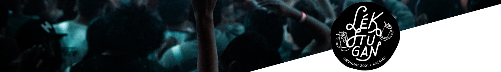

  <picture>
    <source media="(min-width: 700px)" srcset="../assets/lekstugan-header.png">
  </picture>
<mat-drawer-container class="main-container" autosize>
  
  <!-- <app-header></app-header> Only rendered on desktop, excluded on mobile -->
  <mat-drawer #drawer class="sidenav-container" mode="over">
        <button class="navLink" color="primary" routerLink="/" mat-flat-button><mat-icon>home</mat-icon>Hem</button>
        <button class="navLink" color="primary" routerLink="/images" mat-flat-button><mat-icon>photo_library</mat-icon>Fotogalleri</button>
        <button class="navLink" color="primary" routerLink="/events" mat-flat-button><mat-icon>event</mat-icon>Events</button>
        <button class="navLink" color="primary" routerLink="/contact" mat-flat-button><mat-icon>mail</mat-icon>Kontakt</button>
  </mat-drawer>
  <div class="example-sidenav-content">
    <button (click)="drawer.toggle()" mat-icon-button class="example-icon"
      aria-label="Example icon-button with menu icon">
      <mat-icon color="primary">menu</mat-icon>
    </button>
  </div>
  <router-outlet></router-outlet>
</mat-drawer-container>